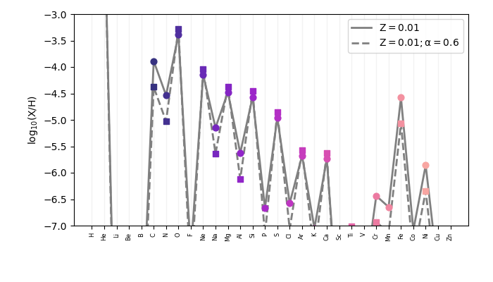
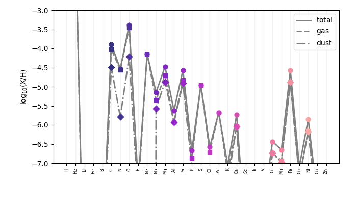

Note
Go to the end to download the full example code
Abundances example#
Demonstrate the use of the abundances module
- 
- 
--------------------
ABUNDANCE PATTERN SUMMARY
X: 0.714
Y: 0.272
Z: 0.013
Z/Z_sol: 1
alpha: 0.000
C: Dopita2006 (scaling of C/H relative to Solar)
N: Dopita2006 (scaling of N/H relative to Solar)
dust-to-metal ratio: False
MAX dust-to-metal ratio: 0.604
----------
element log10(X/H)_total (log10(X/H)+12) [depletion] log10(X/H)_gas log10(X/H)_dust
Hydrogen: 0.00 (12.00) [0.00] 0.00 -99.00
Helium: -1.02 (10.98) [0.00] -1.02 -99.00
Lithium: -10.91 (1.09) [0.00] -10.91 -99.00
Beryllium: -10.58 (1.42) [0.00] -10.58 -99.00
Boron: -9.26 (2.74) [0.00] -9.26 -99.00
Carbon: -3.68 (8.32) [0.00] -3.68 -99.00
Nitrogen: -4.32 (7.68) [0.00] -4.32 -99.00
Oxygen: -3.27 (8.73) [0.00] -3.27 -99.00
Fluorine: -7.40 (4.60) [0.00] -7.40 -99.00
Neon: -4.03 (7.97) [0.00] -4.03 -99.00
Sodium: -5.03 (6.97) [0.00] -5.03 -99.00
Magnesium: -4.36 (7.64) [0.00] -4.36 -99.00
Aluminium: -5.51 (6.49) [0.00] -5.51 -99.00
Silicon: -4.45 (7.55) [0.00] -4.45 -99.00
Phosphorus: -6.55 (5.45) [0.00] -6.55 -99.00
Sulphur: -4.84 (7.16) [0.00] -4.84 -99.00
Chlorine: -6.46 (5.54) [0.00] -6.46 -99.00
Argon: -5.56 (6.44) [0.00] -5.56 -99.00
Potassium: -6.93 (5.07) [0.00] -6.93 -99.00
Calcium: -5.62 (6.38) [0.00] -5.62 -99.00
Scandium: -8.81 (3.19) [0.00] -8.81 -99.00
Titanium: -7.01 (4.99) [0.00] -7.01 -99.00
Vanadium: -8.03 (3.97) [0.00] -8.03 -99.00
Chromium: -6.32 (5.68) [0.00] -6.32 -99.00
Manganese: -6.53 (5.47) [0.00] -6.53 -99.00
Iron: -4.46 (7.54) [0.00] -4.46 -99.00
Cobalt: -6.97 (5.03) [0.00] -6.97 -99.00
Nickel: -5.74 (6.26) [0.00] -5.74 -99.00
Copper: -7.77 (4.23) [0.00] -7.77 -99.00
Zinc: -7.40 (4.60) [0.00] -7.40 -99.00
--------------------
log10(O/H): -3.27
log10(O/H): -3.27
--------------------
ABUNDANCE PATTERN SUMMARY
X: 0.724
Y: 0.266
Z: 0.010
Z/Z_sol: 0.75
alpha: 0.000
C: Dopita2006 (scaling of C/H relative to Solar)
N: Dopita2006 (scaling of N/H relative to Solar)
dust-to-metal ratio: False
MAX dust-to-metal ratio: 0.597
----------
element log10(X/H)_total (log10(X/H)+12) [depletion] log10(X/H)_gas log10(X/H)_dust
Hydrogen: 0.00 (12.00) [0.00] 0.00 -99.00
Helium: -1.04 (10.96) [0.00] -1.04 -99.00
Lithium: -11.03 (0.97) [0.00] -11.03 -99.00
Beryllium: -10.70 (1.30) [0.00] -10.70 -99.00
Boron: -9.38 (2.62) [0.00] -9.38 -99.00
Carbon: -3.89 (8.11) [0.00] -3.89 -99.00
Nitrogen: -4.54 (7.46) [0.00] -4.54 -99.00
Oxygen: -3.39 (8.61) [0.00] -3.39 -99.00
Fluorine: -7.52 (4.48) [0.00] -7.52 -99.00
Neon: -4.15 (7.85) [0.00] -4.15 -99.00
Sodium: -5.15 (6.85) [0.00] -5.15 -99.00
Magnesium: -4.48 (7.52) [0.00] -4.48 -99.00
Aluminium: -5.63 (6.37) [0.00] -5.63 -99.00
Silicon: -4.57 (7.43) [0.00] -4.57 -99.00
Phosphorus: -6.67 (5.33) [0.00] -6.67 -99.00
Sulphur: -4.96 (7.04) [0.00] -4.96 -99.00
Chlorine: -6.58 (5.42) [0.00] -6.58 -99.00
Argon: -5.68 (6.32) [0.00] -5.68 -99.00
Potassium: -7.05 (4.95) [0.00] -7.05 -99.00
Calcium: -5.74 (6.26) [0.00] -5.74 -99.00
Scandium: -8.93 (3.07) [0.00] -8.93 -99.00
Titanium: -7.13 (4.87) [0.00] -7.13 -99.00
Vanadium: -8.15 (3.85) [0.00] -8.15 -99.00
Chromium: -6.44 (5.56) [0.00] -6.44 -99.00
Manganese: -6.65 (5.35) [0.00] -6.65 -99.00
Iron: -4.58 (7.42) [0.00] -4.58 -99.00
Cobalt: -7.09 (4.91) [0.00] -7.09 -99.00
Nickel: -5.86 (6.14) [0.00] -5.86 -99.00
Copper: -7.89 (4.11) [0.00] -7.89 -99.00
Zinc: -7.52 (4.48) [0.00] -7.52 -99.00
--------------------
--------------------
ABUNDANCE PATTERN SUMMARY
X: 0.724
Y: 0.266
Z: 0.010
Z/Z_sol: 0.75
alpha: 0.600
C: Dopita2006 (scaling of C/H relative to Solar)
N: Dopita2006 (scaling of N/H relative to Solar)
dust-to-metal ratio: False
MAX dust-to-metal ratio: 0.517
----------
element log10(X/H)_total (log10(X/H)+12) [depletion] log10(X/H)_gas log10(X/H)_dust
Hydrogen: 0.00 (12.00) [0.00] 0.00 -99.00
Helium: -1.04 (10.96) [0.00] -1.04 -99.00
Lithium: -11.52 (0.48) [0.00] -11.52 -99.00
Beryllium: -11.19 (0.81) [0.00] -11.19 -99.00
Boron: -9.87 (2.13) [0.00] -9.87 -99.00
Carbon: -4.38 (7.62) [0.00] -4.38 -99.00
Nitrogen: -5.03 (6.97) [0.00] -5.03 -99.00
Oxygen: -3.28 (8.72) [0.00] -3.28 -99.00
Fluorine: -8.01 (3.99) [0.00] -8.01 -99.00
Neon: -4.04 (7.96) [0.00] -4.04 -99.00
Sodium: -5.64 (6.36) [0.00] -5.64 -99.00
Magnesium: -4.37 (7.63) [0.00] -4.37 -99.00
Aluminium: -6.12 (5.88) [0.00] -6.12 -99.00
Silicon: -4.46 (7.54) [0.00] -4.46 -99.00
Phosphorus: -7.16 (4.84) [0.00] -7.16 -99.00
Sulphur: -4.85 (7.15) [0.00] -4.85 -99.00
Chlorine: -7.07 (4.93) [0.00] -7.07 -99.00
Argon: -5.57 (6.43) [0.00] -5.57 -99.00
Potassium: -7.54 (4.46) [0.00] -7.54 -99.00
Calcium: -5.63 (6.37) [0.00] -5.63 -99.00
Scandium: -9.42 (2.58) [0.00] -9.42 -99.00
Titanium: -7.02 (4.98) [0.00] -7.02 -99.00
Vanadium: -8.64 (3.36) [0.00] -8.64 -99.00
Chromium: -6.93 (5.07) [0.00] -6.93 -99.00
Manganese: -7.14 (4.86) [0.00] -7.14 -99.00
Iron: -5.07 (6.93) [0.00] -5.07 -99.00
Cobalt: -7.58 (4.42) [0.00] -7.58 -99.00
Nickel: -6.35 (5.65) [0.00] -6.35 -99.00
Copper: -8.38 (3.62) [0.00] -8.38 -99.00
Zinc: -8.01 (3.99) [0.00] -8.01 -99.00
--------------------
[O/Fe] = 0.60
[O/Fe] = 0.60
--------------------
ABUNDANCE PATTERN SUMMARY
X: 0.724
Y: 0.266
Z: 0.010
Z/Z_sol: 0.75
alpha: 0.000
C: Dopita2006 (scaling of C/H relative to Solar)
N: Dopita2006 (scaling of N/H relative to Solar)
dust-to-metal ratio: 0.3
MAX dust-to-metal ratio: 0.597
----------
element log10(X/H)_total (log10(X/H)+12) [depletion] log10(X/H)_gas log10(X/H)_dust
Hydrogen: 0.00 (12.00) [0.00] 0.00 -99.00
Helium: -1.04 (10.96) [0.00] -1.04 -99.00
Lithium: -11.03 (0.97) [0.42] -11.27 -11.40
Beryllium: -10.70 (1.30) [0.20] -10.80 -11.39
Boron: -9.38 (2.62) [0.44] -9.63 -9.74
Carbon: -3.89 (8.11) [0.25] -4.01 -4.49
Nitrogen: -4.54 (7.46) [0.06] -4.56 -5.79
Oxygen: -3.39 (8.61) [0.15] -3.46 -4.21
Fluorine: -7.52 (4.48) [0.35] -7.71 -7.97
Neon: -4.15 (7.85) [0.00] -4.15 -99.00
Sodium: -5.15 (6.85) [0.38] -5.35 -5.57
Magnesium: -4.48 (7.52) [0.40] -4.70 -4.87
Aluminium: -5.63 (6.37) [0.49] -5.92 -5.94
Silicon: -4.57 (7.43) [0.45] -4.83 -4.91
Phosphorus: -6.67 (5.33) [0.38] -6.87 -7.09
Sulphur: -4.96 (7.04) [0.00] -4.96 -99.00
Chlorine: -6.58 (5.42) [0.25] -6.70 -7.18
Argon: -5.68 (6.32) [0.00] -5.68 -99.00
Potassium: -7.05 (4.95) [0.35] -7.24 -7.50
Calcium: -5.74 (6.26) [0.50] -6.04 -6.04
Scandium: -8.93 (3.07) [0.50] -9.23 -9.23
Titanium: -7.13 (4.87) [0.50] -7.43 -7.43
Vanadium: -8.15 (3.85) [0.50] -8.45 -8.45
Chromium: -6.44 (5.56) [0.50] -6.74 -6.74
Manganese: -6.65 (5.35) [0.48] -6.93 -6.97
Iron: -4.58 (7.42) [0.50] -4.88 -4.88
Cobalt: -7.09 (4.91) [0.50] -7.39 -7.39
Nickel: -5.86 (6.14) [0.48] -6.14 -6.17
Copper: -7.89 (4.11) [0.45] -8.15 -8.23
Zinc: -7.52 (4.48) [0.38] -7.72 -7.94
--------------------
log10(C/H) total: -3.89
log10(C/H) gas: -4.01
log10(C/H) dust: -4.49
(<Figure size 700x400 with 1 Axes>, <Axes: ylabel='$\\rm log_{10}(X/H)$'>)
from synthesizer.abundances import (
Abundances,
plot_abundance_pattern,
plot_multiple_abundance_patterns,
)
# by default Abundances creates a solar abundance pattern with no depletion
a1 = Abundances()
print(a1)
# you can access the logarithmic abundances (log10(X/H)) of an element like this:
print(f"log10(O/H): {a1.total['O']:.2f}")
# or this
print(f"log10(O/H): {a1['O']:.2f}")
# we can change the metallicity
a2 = Abundances(Z=0.01)
print(a2)
# or alpha-enhancement
a3 = Abundances(Z=0.01, alpha=0.6)
print(a3)
# we can print a relative solar abundance like this:
print(f"[O/Fe] = {a3.solar_relative_abundance('O', ref_element='Fe'):.2f}")
# or like this:
print(f"[O/Fe] = {a3['[O/Fe]']:.2f}")
# there are also a helper functions for plotting one or more abundance patterns, here we plot two abundance patterns with different alpha abundances
plot_multiple_abundance_patterns(
[a2, a3], labels=[r"Z=0.01", r"Z=0.01; \alpha = 0.6"], show=True, ylim=[-7.0, -3.0]
)
# or the dust-to-metal ratio
a4 = Abundances(Z=0.01, d2m=0.3)
print(a4)
# when d2m > 0.0 total, gas, and dust abundance patterns are provided e.g.
print(f'log10(C/H) total: {a4.total["C"]:.2f}')
print(f'log10(C/H) gas: {a4.gas["C"]:.2f}')
print(f'log10(C/H) dust: {a4.dust["C"]:.2f}')
# we can plot the abundance pattern of each component
plot_abundance_pattern(a4, show=True, ylim=[-7.0, -3.0], lines=["total", "gas", "dust"])
Total running time of the script: (0 minutes 0.773 seconds)